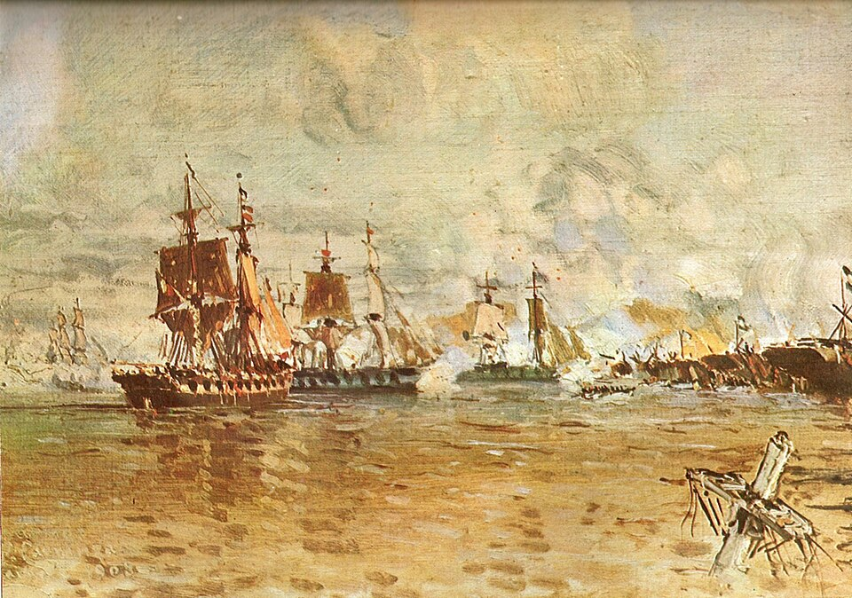

Un día entero de cañón en la Vuelta de Obligado
El general Lucio N. Mansilla cerró el Paraná con tres cadenas y cuatro baterías, y sostuvo desde la mañana el fuego de una veintena de buques de guerra de Inglaterra y Francia. Al caer la tarde las cadenas fueron cortadas y la escuadra pasó. La Confederación deja en la barranca unos doscientos cincuenta muertos y heridos, y una constancia de soberanía.

En un recodo angosto del Paraná, donde el río se estrecha y la corriente obliga a los buques a desfilar casi al alcance de la mano, la Confederación Argentina presentó hoy batalla a las dos mayores potencias navales del mundo. El general Lucio N. Mansilla había tendido de costa a costa tres gruesas cadenas sostenidas por una hilera de lanchones, y emplazado en la barranca cuatro baterías con unos mil hombres. Del otro lado, una veintena de buques de guerra ingleses y franceses, muchos de ellos movidos por vapor, con la artillería más moderna que conoce el siglo. El cañoneo comenzó con la mañana y no cesó en todo el día.
Los buques, fuera del alcance de los cañones criollos, viejos y de corto tiro, batieron las baterías durante horas antes de acercarse. Los artilleros de la Confederación sostuvieron sus piezas hasta agotar la munición, y cuando los botes enemigos desembarcaron gente para tomar las posiciones, se peleó en la barranca cuerpo a cuerpo. El general Mansilla, que recorría las baterías animando a su gente, cayó herido por un tiro de metralla al encabezar una carga. Hacia el atardecer, con las municiones agotadas, los buques cortaron las cadenas y la escuadra pasó río arriba. Cuenta la jornada unos doscientos cincuenta muertos y heridos entre los defensores.
El combate no es un rayo en cielo sereno. Hace meses que Inglaterra y Francia bloquean el puerto de Buenos Aires y exigen la libre navegación de nuestros ríos interiores, para llevar sus mercancías al Paraguay y al litoral sin pedir licencia a la Confederación que gobierna el brigadier Rosas. El convoy que hoy forzó el paso escolta precisamente a decenas de buques mercantes cargados de manufacturas. Las potencias alegan el comercio y la civilización; el gobierno de la Confederación responde que el Paraná es un río interior de la República y que ninguna bandera extranjera lo remonta sin su permiso.
Los que vienen del combate refieren escenas que no se olvidan: los lanchones ardiendo sobre el agua, los artilleros sirviendo las piezas entre el humo y la sangre, la banda tocando en lo alto de la barranca mientras caía la metralla. Se dice que mujeres de los pagos vecinos acudieron a curar heridos y acarrear cartuchos. Los partes enemigos, cuentan, admiten averías serias en varios buques y no pocas bajas: la escuadra pasó, pero pagando un precio que ninguna de las dos potencias esperaba de estas costas ni de estos cañones del tiempo de la colonia.
Fría y llanamente: la jornada terminó con las cadenas rotas y las banderas de Inglaterra y Francia navegando aguas arriba. Sería necio disfrazar de victoria lo que fue una derrota de las armas. Pero hay derrotas que fundan más que muchas victorias. Veinte buques de las primeras marinas del mundo necesitaron un día entero de fuego para pasar frente a mil criollos mal armados, y llevan en sus cascos y en sus listas de bajas la constancia. Quede escrito para el que mañana quiera intentarlo: los ríos de esta tierra tienen dueño, y no se navegan gratis.